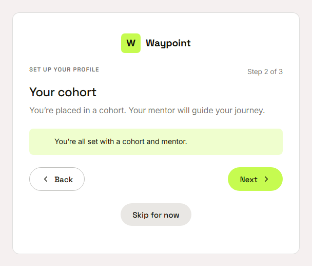
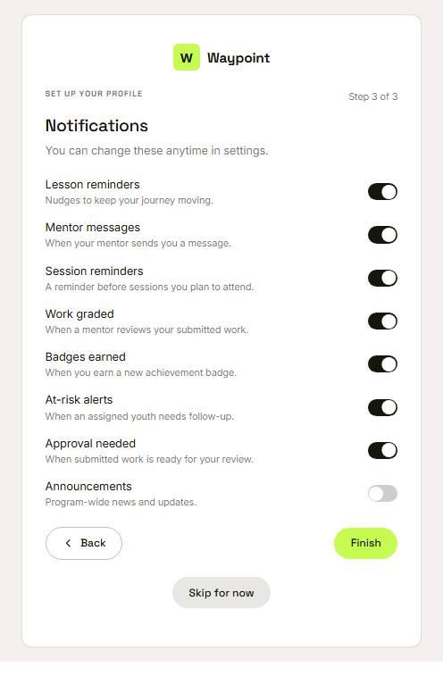
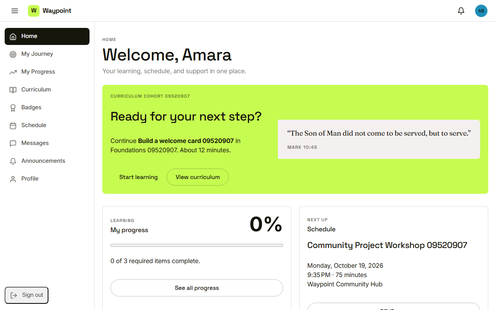

Waypoint · Video 007
Setting up a new youth
Three short steps, and they can be skipped
Step one: your profile
Display name is the only required answer
Step two: your cohort

Set by the program team, confirmed here
Step three: notifications

Lesson reminders and mentor messages on, announcements off
Welcome home

Setup done, or skipped
Things to remember
Three steps: profile, cohort, notifications
Only the display name is required
Cohort and mentor are set by staff
Skip for now leads to the home page